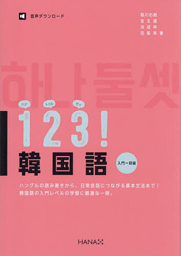
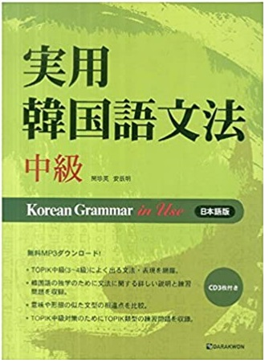
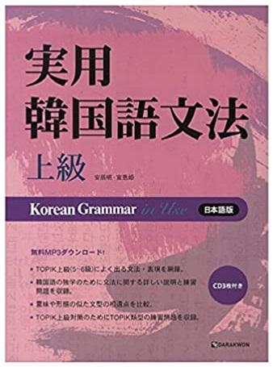
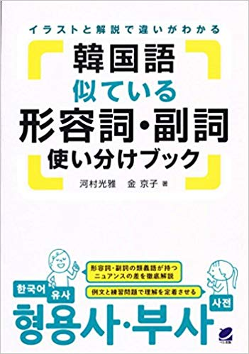

ミリネ重要レッスン
ミリネ重要レッスンのコンテンツ部分
グループレッスンはみんなで和気あいあい楽しく勉強できるコースです。
入門＆初級マスター講座
Ⅰ『最短5ヶ月でハングルの読み書きから、基礎文法まで、テキストが完走できます！』
5ヶ月間、毎週日曜日(全20回、50分×2コマ/1回)の講座で、ハングルの読み書きから基礎文法が学べるコースです。
Ⅱ 日常生活や旅行ですぐ使える、自然な言い回しが学習できます。
詳細
対象
全くの初心者・入門
目標
❶ハングルの読み書き、正確な発音ができるようになります。
❷簡単な日常会話ができるようになります。
授業の流れ
❶ 授業の前に教科書の練習問題を解いて、予習します。
❷ 授業中に講師が各項目を解説し、練習問題を解きます。
適宜、講師が教科書の内容を補足します。
また、疑問点について質疑応答の時間を持ち、明確に内容を把握します。
❸ 授業の後は、授業動画を見て、復習します。
日程
2024年9月22日開始、日 10時~12時 (50分×2コマ)
教室
オンライン(Zoom、欠席時動画提供)
定員
２～６人
内容
| 回数 | 時限 | 項目 | 詳細 | 日程 |
|---|---|---|---|---|
| 1 | 1限目 | 母音①、② | 9/22(日) | |
| 2限目 | 子音（平音） | |||
| 2 | 1限目 | 子音（激音、濃音） | 9/29(日) | |
| 2限目 | 母音③ | |||
| 3 | 1限目 | 子音④（パッチム） | 10/6(日) | |
| 2限目 | 子音⑤（複合パッチム） | |||
| 4 | 1限目 | 発音変化① | 連音化、濃音化 | 10/13(日) |
| 2限目 | 発音変化② | 激音化、鼻音化 | ||
| 5 | 1限目 | 発音変化③ | 流音化、ㅎ弱音化 | 10/20(日) |
| 2限目 | 発音変化④ | ㄴ挿入、口蓋音化 | ||
| 6 | 1限目 | 1課① 名詞＋です | 文法学習 ①- 는/은 ②입니다 ③이에요, 예요 ④(이)라고 합니다 | 10/27(日) |
| 2限目 | 1課② 名詞＋です | 会話練習 日常で使える挨拶 |
||
| 7 | 1限目 | 2課① 名詞＋ではありません |
文法学習 ①이/가 아닙니다, 아니에요 ②A 이/가 아니라 B이에요, 예요 ③ - 도 ④(이)라고 합니다 | 11/3(日) |
| 2限目 | 2課② 名詞＋ではありません |
会話練習 様々な場面での返事として使える 아니에요 職業と身分に関する表現 |
||
| 8 | 1限目 | 3課① います、あります |
①- 이/가 ②있어요/ 없어요 ③ - 에 ④은 /는 한국어로 뭐라고 해요? | 11/10(日) |
| 2限目 | 3課② います、あります |
会話練習 家族に関する表現 |
||
| 9 | 1限目 | 4課① これ、それ、あれ （指示代名詞） |
文法学習 ①이, 그, 저 ②이것, 그것, 저것 ③여기, 거기, 저기 ④ - 과, 와, 하고, (이)랑 | 11/17(日) |
| 2限目 | 4課② これ、それ、あれ （指示代名詞） |
会話練習 位置を表す表現 |
||
| 10 | 1限目 | 5課① 動詞/形容詞＋です、ます （합니다体） |
文法学習 ①- 습니다/ - ㅂ니다 ②-을/ 를 ③ - 고 | 11/24(日) |
| 2限目 | 5課② 動詞/形容詞＋です、ます （합니다体） |
会話練習 日常生活に関する表現 |
||
| 11 | 1限目 | 6課①
動詞/形容詞＋です、ます （해요体） |
文法学習 ①아/어요 ②- 에서 ③-으로/로 | 12/1(日) |
| 2限目 | 6課② 動詞/形容詞＋です、 ます （해요体） |
会話練習 代名詞 |
||
| 12 | 1限目 | 7課① 否定形 | 文法学習 ①안, - 지 않다 ② - 지만 | 12/8(日) |
| 2限目 | 7課②否定形 | 会話練習 体に関する表現 |
||
| 13 | 1限目 | 8課① 数字① ～ください |
文法学習 ①漢数詞 ②年月日、数の尋ね方 ③주세요, 아/어 주세요 | 12/15(日) |
| 2限目 | 8課② 数字① ～ください |
会話練習 おいしい韓国料理 飲食店でよく使われる表現 |
||
| 14 | 1限目 | 9課① 数字② 時間と曜日 |
文法学習 ①固有数詞 ②時間と曜日 | 12/22(日) |
| 2限目 | 9課② 数字② 時間と曜日 |
会話練習 韓国人の時間感覚 過去・現在・未来 |
||
| 15 | 1限目 | 10課① 過去形、理由表現 |
文法学習 ①았/었다 ②아/어서 | 1/19(日) |
| 2限目 | 10課② 過去形、理由表現 |
会話練習 変則活用 |
||
| 16 | 1限目 | 11課① 尊敬表現 |
文法学習 ①(으)시다 ② - 네요 | 1/26(日) |
| 2限目 | 11課② 尊敬表現 |
会話練習 尊敬表現を使った万能質問 |
||
| 17 | 1限目 | 12課① 尊敬表現の過去形 |
文法学習 ①(으)셨다 ②- 지요? | 2/1(日) |
| 2限目 | 12課② 尊敬表現の過去形 |
会話練習 様々な品詞の尊敬表現 尊敬表現が使われた日常あいさつ |
||
| 18 | 1限目 | 13課① 進行形、目的、仮定表現 |
文法学習 ① - 고 있다 ② (으)러 ③ (으)면 | 2/8(日) |
| 2限目 | 13課② 進行形、目的、仮定表現 |
会話練習 疑問詞のまとめ |
||
| 19 | 1限目 | 14課①
希望表現、 意思・予定表現 |
文法学習 ① - 고 싶다, - 고 싶어하다 ② - 기 싫다, - 기 싫어하다 ③ - ㄹ 거예요. | 2/15(日) |
| 2限目 | 14課② 希望表現、 意思・予定表現 |
会話練習 助詞のまとめ |
||
| 20 | 1限目 | 1課～7課 総復習 | 2/22(日) | |
| 2限目 | 8課～14課 総復習 |
テキスト
１２３！韓国語 入門〜初級 (ミリネ韓国語教室講師の共著)

授業料
| 1回当たり | 回数 | 納入額 | 税込 |
|---|---|---|---|
| 2,990円 × 2時限 = 5,980円 | 10回分 (20回完結) | 59,800円+税 | 65,780円 |
※20回完結のコースです。最初の10回分をお支払いいただき、残りの10回分の受講料はは講座の9回目が終わったあとに、 お振込みのご案内をさせていただきます。
授業料
| 回数 | 1回当たり | 納入額 | 税込 |
|---|---|---|---|
| 20回分(1回払い) | 2,900円 × 2時限 = 5,800円 | 116,000円+税 | 127,600円 |
| 10回分 (2回払い、2か月後残りの10回分支払う) | 3,400円 × 2時限 = 6,800円 | 68,000円+税 | 74,800円 |
※20回完結のコースです。2回払いの場合は最初10回分をお支払いいただき、残りの10回分の受講料はは講座の9回目が終わったあとに、お振込みのご案内をさせていただきます。
募集期間
～9/19(木)
お申込み
生徒の声
| Y様｜2022.08 |
| 先生の説明が丁寧でわかりやすく、最後まで投げ出さずに受講できた点が良かったと思います。 |
| FU様｜2016.11 |
| 会話の授業の本文は今までのテキストにない様なくだけた文調のもにがものがあり文章そのものが楽しいです。 作文も日常的使われる内容のものが多く実践に役立ちそうです。まだ４回の受講ですが先生が４人程いらしてその時々で違う先生とお話できるのは 今までにない経験でやはり楽しいです。復習がなかなか追いつかづ大変ですが、 毎回１コマも２コマも実際に使える表現も学んでいきたいと思っています。 |
| KI様｜2016.11 |
| 独学では理解できない部分を直接聞いたり、くり返し添削して頂くことによって、慣用句に慣れてきた実感があります。 またあえて「このような表現は可能か」と気になる点を作文して、違うならなぜ違うのかを知ることができるので勉強になります。 会話や作文はまちがえに経験ほど頭に入ると思いました。それでもまたまちがえるので自分で驚くほどです。 会話も口に出そうとするといつも想像以上に 言葉に詰まります。」だたらこそ毎週２時間くり返し学習できるのがいい所だと思います。 |
| KA様｜2016.11 |
| 楽しく受講させていただいてます。テキストにはないいろいろなことも学ぶことができ、毎回受講するのを楽しみにしています。 先生も何人かいらっしゃて、その先生によって違う観点から教えてもらう点もとてもよいです。 だ聞き取りがよくできないですが、何とかついていってます。 |
中級｜文法まとめ5ヶ月講座
確実なレベルアップ！ミリネの文法まとめ講座はここが違う!
Ⅰ『最短5ヶ月で中級レベルの文法テキストが完走できます！』
5ヶ月間、土曜日(月４回、2コマ)の講座で、中級文法の全てが学べるコースです。
Ⅱ『中級文法がイマイチ整理出来ていない』・・・
似ている文法の使い分けをしっかり学び、たくさん会話文の練習が出来ます。
Ⅲ『せっかく文法を学んでも身に付かない』・・・
添削課題を通して学んだ文法が正しいのかを確認し、定着を図ります。
詳細
| レベル | 中級 |
|---|---|
| 授業について | 自分のレベルが中級だとは思うけど、まだよく分からなかったり不安な部分があったりしませんか？ この機会にテキスト１冊を使って中級者が知っておくべき表現と文法を整理しましょう。 また、会話をする際に正確な使い方がわからず、自信をもって話せず、初級表現を使ってしまいがちな方におすすめの講座です。 この講座で学ぶ表現を使いこなせると中級者としての自信が付きます。 |
| 対象 | 中級文法をまとめて学びたい方(TOPIK3～5級レベル) |
| 目標 | ❶ 中級者なら必ず知っておくべき表現と文法を身に付けます。 ❷ 中級者が使うべき語彙・表現を学び、聞き取りの能力を高めます。 ❸ 中級レベルでたくさん出てくる似ている表現の違いについて正確に理解できるようにします。 |
| 授業の流れ | ❶ 授業の前に添削課題は前もってお送りします。 ❷ テキストの分からない単語などは前もって調べておき、問題を解いておきます。 ❸ 授業中に講師が使い方や正確な意味を解説します。 ❹ 疑問点について質疑応答の時間を持ち、明確に内容を把握します。 |
定員 | 2～8人 |
| 日程 | 3月1日開始、土 10時~12時 (50分) |
| 募集期間 | ～2月27日(木) |
| 教室 | オンライン(Zoom、欠席時動画提供) |
| テキスト |
 実用韓国語文法「中級」 + ミリネ独自添削課題 |
| 回数 | 時限 | 項目 | 詳細 | 日程 |
|---|---|---|---|---|
| 1 | 1限目 | 「推測と予想❶」 | -아/어 보이다 -은/는 모양이다 | 3/1(土) |
| 2限目 | 「推測と予想❷」 | -을 텐데 -을 걸요 |
||
| 2 | 1限目 | 「推測と予想❸」 | -은/는/을 줄 몰랐다(알았다) -을 지도 모르다 | 3/8(土) |
| 2限目 | 「対照」 | -기는 하지만, -기는 -지만 -은/는 반면에 -은/는데도 |
||
| 3 | 1限目 | 「叙述とタメ口」 | 서술체 반말체 | 3/15(土) |
| 2限目 | 「理由❶」 | -거든요 -잖아요 -느라고 |
||
| 4 | 1限目 | 「理由❷」 | -는 바람에 -는 탓에 | 3/22(土) |
| 2限目 | 「理由❸」 | -고 해서 -을까 봐 |
||
| 5 | 1限目 | 「他人の話や文の引用❶」 | -다고요? -다고 하던데 | 3/29(土) |
| 2限目 | 「他人の話や文の引用❷」 | -다면서요? -다니요? |
||
| 6 | 1限目 | 「決心と意図❶」 | -을까 하다 -고자 -(으)려던 참이다 | 4/5(土) |
| 2限目 | 「決心と意図❷」 | -을 겸 -을 겸 -아/어야지요 |
||
| 7 | 1限目 | 「推薦と助言」 | -을 만하다 -도록 하다 -지 그래요? | 4/12(土) |
| 2限目 | 「回想」 | -던
-더라고요 -던데요 |
||
| 8 | 1限目 | 「受け身」 | 단어 피동(-이/히/리/기-) -아/어지다 -게 되다 | 4/19(土) |
| 2限目 | 「使役」 | 단어 사동 (-이/히/리/기-) -게 하다 |
||
| 9 | 1限目 | 「条件」 | -아/어야 -거든 | 4/26(土) |
| 2限目 | 「追加❶」 | -을 뿐만 아니라 -은/는 데다가 |
||
| 10 | 1限目 | 「追加❷」 | -조차 -만 해도 | 5/3(土) |
| 2限目 | 「途中」 | -는 길에 -다가 |
||
| 11 | 1限目 | 「程度」 | -을 정도로 -만 하다 -을/는/을 만큼 | 5/10(土) |
| 2限目 | 「選択❶」 | 아무 + (이)나 / 아무 + 도 -(이)나 -(이)라도 |
||
| 12 | 1限目 | 「選択❷」 | -든지 -든지 -은/는 대신에 | 5/17(土) |
| 2限目 | 「時間や順次的な行動❶」 | -만에 -아/어 가지고 |
||
| 13 | 1限目 | 「時間や順次的な行動❷」 | -아/어다가 -고서 | 5/24(土) |
| 2限目 | 「発見と結果❶」 | -고 보니 -다 보니 |
||
| 14 | 1限目 | 「発見と結果❷」 | -다 보면 -더니 | 5/31(土) |
| 2限目 | 「発見と結果❸」 | -았/었더니 -다가는 -(은)/는 셈이다 |
||
| 15 | 1限目 | 「状態❶」 | -아/어 놓다 -아/어 두다 | 6/7(土) |
| 2限目 | 「状態❷」 | -은 채로 -은/는 대로 |
||
| 16 | 1限目 | 「性質と属性」 | -은/는 편이다 -스럽다 -답다 | 6/14(土) |
| 2限目 | 「強調❶」 | 얼마나 -은/는지 모르다 -을 수밖에 없다 |
||
| 17 | 1限目 | 「強調❷」 | -을 뿐이다 -(이)야말로 | 6/21(土) |
| 2限目 | 「目的」 | -게 -도록 |
||
| 18 | 1限目 | 「完了❶」 | -았/었다가 -았/었던 | 6/28(土) |
| 2限目 | 「完了❷」 | -아/어 버리다 -고 말다 |
||
| 19 | 1限目 | 「無駄なとき」 | -(으)나 마나 -아/어 봤자 | 7/5(土) |
| 2限目 | 「仮定状況」 | -은/는다면 -았/었더라면 -을 뻔하다 |
||
| 20 | 1限目 | 「後悔」 | -을 걸 그랬다 -았/었어야 했는데 | 7/12(土) |
| 2限目 | 「習慣と態度」 | -곤 하다 -기는요 -은/는 척하다 |
授業料
| 回数 | 1回当たり | 納入額 | 税込 |
|---|---|---|---|
| 10回分 (2回払い、2か月後残りの10回分支払う) | 3,180円 × 2時限 = 6,360円 | 63,600円+税 | 69,960円 |
| 20回分(一括払い) | 2,900円 × 2時限 = 5,800円 | 116,000円+税 | 127,600円 |
※20回完結のコースです。2回払いの場合は最初10回分をお支払いいただき、残りの10回分の受講料はは講座の8回目が終わったあとに、お振込みのご案内をさせていただきます。
お申込み
生徒の声
| 関東地域｜2021.11 |
| 会話の授業の本文は今までのテキストにない様なくだけた文調のもにがものがあり文章そのものが楽しいです。 作文も日常的使われる内容のものが多く実践に役立ちそうです。まだ４回の受講ですが先生が４人程いらしてその時々で違う先生とお話できるのは 今までにない経験でやはり楽しいです。 復習がなかなか追いつかづ大変ですが、毎回１コマも２コマも実際に使える表現も学んでいきたいと思っています。 |
| 関東地域｜2021.11 |
| この講座を受講することで気がついたのですが、中級文法が、こんなに多岐に渡る内容だったのか、いまさらながらに感じています。会話も決まった文法でしかできていなかったことにも気がつきました。その点が本当によかったです。박다정先生の細かい説明がわかりやすく、とても助かりました。時々おっしゃる冗談がより講座に花をそえてくれました！もう一度しっかり復習に時間をかけたいと思います。 |
| 関東地域｜2021.11 |
| 自分のレベルにちょうど合っていたことと、先生の教え方が非常にわかりやすく、かつ一方的でなかったので、気持ちよく授業を受けられました。悪い点は特にありませんが、強いて言えば、授業をあと4回程度増やして、一回の授業で学ぶ内容を少し減らせば、より深く身につくような気がします。 |
| 中部地域｜2021.11 |
| レッスン中に本には記載のない注意点や自然な表現も教えて頂いたのが勉強になりました。習った文法を使っての文章作成の宿題も添削していただき、勉強になりました。文法以外の表現が難しかったです。文章作成はミリネ独自のと併せ、自分の身近なテーマでも文を作成して添削して頂けたらもっといいと思いました。 |
| FU様｜2016.11 |
| 先生の解説がわかりやすかったです。少人数だったのも良かったです。勉強熱心なクラスの方にも恵まれていたと思います。教科書の例文だと、答えが予想できてしまうので、例文を越えた対話形式の質問があると、例文がその日のうちに身につきやすいと思いました。今回はオンライン授業なので申し込んだのですが、やはりオンラインだと対面と比べると吸収できる量が格段に違うように感じました。授業の間に挟み込まれる雑談情報が入ってきにくいように感じました。←オンラインだとどうしても余計な？話をしにくいのですが、語学を勉強する時は雑談から知識が広がることが多いと感じています。 |
| KI様｜2016.11 |
| 独学では理解できない部分を直接聞いたり、くり返し添削して頂くことによって、慣用句に慣れてきた実感があります。 またあえて「このような表現は可能か」と気になる点を作文して、違うならなぜ違うのかを知ることができるので勉強になります。 会話や作文はまちがえに経験ほど頭に入ると思いました。それでもまたまちがえるので自分で驚くほどです。会話も口に出そうとするといつも想像以上に 言葉に詰まります。」 だたらこそ毎週２時間くり返し学習できるのがいい所だと思います。 |
| KA様｜2016.11 |
| 楽しく受講させていただいてます。テキストにはないいろいろなことも学ぶことができ、毎回受講するのを楽しみにしています。 先生も何人かいらっしゃて、その先生によって違う観点から教えてもらう点もとてもよいです。 まだ聞き取りがよくできないですが、何とかついていってます。 |
上級｜文法まとめ4ヶ月講座
確実なレベルアップ！ミリネの文法まとめ講座はここが違う!
Ⅰ『最短4ヶ月で上級レベルの文法テキストが完走できます！』
4ヶ月間、土曜日(月４回、2コマ)の講座で、上級文法の全てが学べるコースです。
Ⅱ『上級文法がイマイチ整理出来ていない』・・・
似ている文法の使い分けをしっかり学び、たくさん会話文の練習が出来ます。
Ⅲ『せっかく文法を学んでも身に付かない』・・・
添削課題を通して学んだ文法が正しいのかを確認し、定着を図ります。
詳細
| レベル | 上級 |
|---|---|
| 授業について | 自分のレベルが上級だとは思うけど、まだよく分からなかったり不安な部分があったりしませんか？ この機会にテキスト１冊を使って上級者が知っておくべき表現と文法を整理しましょう。 また、会話をする際に正確な使い方がわからず、自信をもって話せず、上級表現を使ってしまいがちな方におすすめの講座です。 この講座で学ぶ表現を使いこなせると上級者としての自信が付きます。 |
| 対象 | 上級文法をまとめて学びたい方(TOPIK5～6級レベル) |
| 目標 | ❶ 上級者なら必ず知っておくべき表現と文法を身に付けます。 ❷ 上級者が使うべき語彙・表現を学び、聞き取りの能力を高めます。 ❸ 上級レベルでたくさん出てくる似ている表現の違いについて正確に理解できるようにします。 |
| 授業の流れ | ❶ 授業の前に添削課題は前もってお送りします。 ❷ テキストの分からない単語などは前もって調べておき、問題を解いておきます。 ❸ 授業中に講師が使い方や正確な意味を解説します。 ❹ 疑問点について質疑応答の時間を持ち、明確に内容を把握します。 |
定員 | 3～8人 |
| 日程 | 4月19日開始、土 13時~15時 (50分) |
| 募集期間 | ～4月16日(水) |
| 教室 | オンライン(Zoom、欠席時動画提供) |
| テキスト |
 実用韓国語文法「上級」 + ミリネ独自添削課題 |
| 回数 | 時限 | 項目 | 詳細 | 日程 |
|---|---|---|---|---|
| 1 | 1限目 | 「選択」 | 01 -느니 02 -(으)ㄹ 바에야 03 -건-건 |
4/19(土) |
| 2限目 | 「選択・引用」 | -04 -(느)s다기보다는 -01 보고 |
||
| 2 | 1限目 | 「引用」 | 02 -(느)ㄴ다니까 03 -(느)ㄴ다면서 04 에 의하면 |
4/26(土) |
| 2限目 | 「名詞化」 | 01 -(으)ㅁ 02 -는 데 03 -는 바 |
||
| 3 | 1限目 | 「原因と理由」 | 01 (으)로 인해서 02 -는 통에 03 (으)로 말미암아 |
5/10(土) |
| 2限目 | 「原因・理由」 | 04 -느니만큼 05 -는 이상 06 -기로서니 |
||
| 4 | 1限目 | 「原因・理由」 | 07 -기에망정이지 08 -(느)ㄴ답시고 09 -(으)ㅁ으로써 |
5/17(土) |
| 2限目 | 「原因・理由」 | 10 -기에 11 -길래 |
||
| 5 | 1限目 | 「仮定」 | 01 -더라도 02 -(으)ㄹ지라도 03 -(으)ㄴ들 |
5/24(土) |
| 2限目 | 「仮定」 | 04 -(으)ㄹ망정 05 -(느)ㄴ다고 치다 06 -는 셈치다 |
||
| 6 | 1限目 | 「続けてやる行動」 | 01 -기가 무섭게 02 -자 |
6/7(土) |
| 2限目 | 「条件・決定」 | 01 -는 한 02 -(으)ㄹ라치면 03 -노라면 |
||
| 7 | 1限目 | 「条件・決定」 | 04 -느냐에 달려 있다 05 -기 나름이다 | 5/31(土) |
| 2限目 | 「別々にする行動 / 一緒にする行動」 | 01 은/는 대로 02 -는 김에 |
||
| 8 | 1限目 | 「対照・反対」 | 01 -건만 02 -고도 03 -(으)ㅁ에도 불구하고 |
6/14(土) |
| 2限目 | 「類似」 | 01 -듯이 02 -다시피 하다 |
||
| 9 | 1限目 | 「追加・含む」 | 01 -거니와 02 -기는커녕 03 -(으)ㄹ뿐더러 | 6/21(土) |
| 2限目 | 「追加・含む」 | 04 -되 05 마저 06 을/를 비롯해서 |
||
| 10 | 1限目 | 「習慣・態度」 | 01 -아/어 대다 02 -기 일쑤이다 03 -는 둥 마는 둥 하다 | 6/28(土) |
| 2限目 | 「程度」 | 01 -(으)리만치 02 -다 못해 |
||
| 11 | 1限目 | 「意図」 | 01 -(느)ㄴ다는 것이 02 -(으)려고 들다 03 -(으)려다가 | 7/5(土) |
| 2限目 | 「推量・可能性」 | 01 -는 듯이 02 -(느)ㄴ다는 듯이 03 -는 듯하다 |
||
| 12 | 1限目 | 「推量・可能性」 | 04 -(으)ㄹ 게 뻔하다 05 -(으)ㄹ 법하다 06 -(으)ㄹ 리가 없다 | 7/12(土) |
| 2限目 | 「可能性・当然」 | 07 -기 십상이다 01 -기 마련이다 02 -는 법이다 |
||
| 13 | 1限目 | 「羅列」 | 01 -는가 하면 02 -느니 -느니 하다 03 -(으)랴 -(으)랴 | 7/19(土) |
| 2限目 | 「羅列・結果」 | 04 (이)며 (이)며 01 -(으)ㄴ 끝에 02 -아/어 내다 |
||
| 14 | 1限目 | 「結果・回想」 | 03 -(으)ㄴ 나머지 04 -데요 | 7/26(土) |
| 2限目 | 「状況・基準」 | 01 -는 가운데 02 -는 마당에 03 치고 04 -(으)ㅁ에 따라 |
||
| 15 | 1限目 | 「強調」 | 01 여간 -지 않다 02 -기가 이를 데 없다 03 -(으)ㄹ래야 -(으)ㄹ 수가 없다 |
8/2(土) |
| 2限目 | 「尊敬」 | 01 하오체 02 하게체 |
||
| 16 | 1限目 | 「その他必要な表現」 | 01 -(으)므로, -(으)나, -(으)며 02 -피동과 사동 | 8/9(土) |
| 2限目 | 「その他必要な表現」 | 03 -(으)ㄹ세라, -는 양 -는 한편, -(으)ㄹ 턱이 없다 |
授業料
| 回数 | 1回当たり | 納入額 | 税込 |
|---|---|---|---|
| 8回分 (2回払い、2か月後残りの8回分支払う) | 3,200円 × 2時限 = 6,400円 | 51,200円+税 | 56,320円 |
| 16回分(一括払い) | 2,900円 × 2時限 = 5,800円 | 92,800円+税 | 102,080円 |
※16回完結のコースです。2回払いの場合は最初8回分をお支払いいただき、残りの8回分の受講料はは講座の7回目が終わったあとに、お振込みのご案内をさせていただきます。
お申込み
生徒の声
| 関東地域｜2021.11 |
| 会話の授業の本文は今までのテキストにない様なくだけた文調のもにがものがあり文章そのものが楽しいです。 作文も日常的使われる内容のものが多く実践に役立ちそうです。まだ４回の受講ですが先生が４人程いらしてその時々で違う先生とお話できるのは 今までにない経験でやはり楽しいです。 復習がなかなか追いつかづ大変ですが、毎回１コマも２コマも実際に使える表現も学んでいきたいと思っています。 |
| 関東地域｜2021.11 |
| この講座を受講することで気がついたのですが、中級文法が、こんなに多岐に渡る内容だったのか、いまさらながらに感じています。会話も決まった文法でしかできていなかったことにも気がつきました。その点が本当によかったです。박다정先生の細かい説明がわかりやすく、とても助かりました。時々おっしゃる冗談がより講座に花をそえてくれました！もう一度しっかり復習に時間をかけたいと思います。 |
| 関東地域｜2021.11 |
| 自分のレベルにちょうど合っていたことと、先生の教え方が非常にわかりやすく、かつ一方的でなかったので、気持ちよく授業を受けられました。悪い点は特にありませんが、強いて言えば、授業をあと4回程度増やして、一回の授業で学ぶ内容を少し減らせば、より深く身につくような気がします。 |
| 中部地域｜2021.11 |
| レッスン中に本には記載のない注意点や自然な表現も教えて頂いたのが勉強になりました。習った文法を使っての文章作成の宿題も添削していただき、勉強になりました。文法以外の表現が難しかったです。文章作成はミリネ独自のと併せ、自分の身近なテーマでも文を作成して添削して頂けたらもっといいと思いました。 |
| FU様｜2016.11 |
| 先生の解説がわかりやすかったです。少人数だったのも良かったです。勉強熱心なクラスの方にも恵まれていたと思います。教科書の例文だと、答えが予想できてしまうので、例文を越えた対話形式の質問があると、例文がその日のうちに身につきやすいと思いました。今回はオンライン授業なので申し込んだのですが、やはりオンラインだと対面と比べると吸収できる量が格段に違うように感じました。授業の間に挟み込まれる雑談情報が入ってきにくいように感じました。←オンラインだとどうしても余計な？話をしにくいのですが、語学を勉強する時は雑談から知識が広がることが多いと感じています。 |
| KI様｜2016.11 |
| 独学では理解できない部分を直接聞いたり、くり返し添削して頂くことによって、慣用句に慣れてきた実感があります。 またあえて「このような表現は可能か」と気になる点を作文して、違うならなぜ違うのかを知ることができるので勉強になります。 会話や作文はまちがえに経験ほど頭に入ると思いました。それでもまたまちがえるので自分で驚くほどです。会話も口に出そうとするといつも想像以上に 言葉に詰まります。」 だたらこそ毎週２時間くり返し学習できるのがいい所だと思います。 |
| KA様｜2016.11 |
| 楽しく受講させていただいてます。テキストにはないいろいろなことも学ぶことができ、毎回受講するのを楽しみにしています。 先生も何人かいらっしゃて、その先生によって違う観点から教えてもらう点もとてもよいです。 まだ聞き取りがよくできないですが、何とかついていってます。 |
月1回中級会話・添削・使い分け講座(4ヶ月コース)
効率よく語彙を増やして最も自然な表現を学べる！
ミリネ集中講座の人気コンテンツ短文添削の定期グループレッスンです。
月1回の3時間集中レッスンで予習・復習の時間もたっぷり！
詳細
対象
ハングル検定準2級、TOPIK3級以上
教室
オンライン
日程
2021年7月3日15:00~18:00
(月1回土曜日/翌月の日程は生徒さんの参加しやすい日で決めております）
テキスト

中級レベルになると、「日本語の表現は一つなのに韓国語だと表現がたくさんあって、どのように使い分けるのかわからない」ということがたびたびあります。
本書では形容詞・副詞それぞれの表現のニュアンスの違いや使い方をイラストと解説、使い方がわかる例文などを通して詳しく説明していきます。
最後に練習問題で文脈に合う形容詞・副詞を正しく選ぶことができるかをチェック。
目標
短期間に語彙を増やし、混同しやすい動詞の使い分け、中上級の文型をマスター。
中級から上級へのレベルアップ。
内容
| 時限 | レッスン名 | 内容 |
|---|---|---|
| 1限目 | 会話トレーニング 韓訳復習 韓作文の添削❶ |
身近なことをテーマにフリートーキングをして前回に習った内容を復習します。 前回の授業で習った表現と文章を、講師が日本語で言うのでそれを韓国語に瞬訳します。 また追加の質問をしたりし、それに韓国語で答えます。 |
| 2限目 | 韓作文の添削❷ | 添削をしながら、似ている表現の違いについて、日本語での説明が必要な場合は日本語で話しますが、基本的には韓国語で授業は進行します。 |
| 3限目 | 韓作文の添削❸ | 3コマ(50分)の間に、添削、会話、使い分け、自然な韓国語表現を学びます。 |
体験レッスン
一日体験レッスンも可能です。フォームよりお申し込みください。
※体験レッスン料：3コマ、7,500円+税=8,250円(税込)
募集期間
随時募集中
入学金
6,000円
授業料
| 定員 | 授業料(税抜) | 税込み | 期限 |
|---|---|---|---|
| 2-5人 | 2,800円 × 3コマ × 4ヶ月 = 33,600円 | 36,960円 | 4ヶ月 |
お申込み
生徒の声
| YH様｜2016.12 ｜東京都 |
| かれこれこのクラスは、初級の頃から続けていてすでに今現在で5年近くになります。 一か月に一回土曜日の夕方3時間だけのクラスなんですが、少しメンバーが変わったりクラス自体が半年程お休みの間もあったものの、 こんなに長く続けてこれたのは、金玄謹先生のたいへんに親切でわかりやすい説明に韓国語への興味がどんどん沸き上がってくるせいだと思っています。 単なる作文の添削だけで終わるのではなく、作った作文の単語や表現を膨らませて、独学や参考書ではなかなか知り得ないことまで教えて下さることが、本当に魅力的です。 勿論、ソウル大のテキストやパダスギの個人授業も大好きですが、こちらのグループレッスンもとても楽しいので、ずっと続けていければと思っています。 |
上級文法＆会話講座（3ヶ月コース）
上級者へのレベルアップを目指す！
中上級者のための【土曜・上級Ⅰ講座】3ヶ月講座(更新制)
韓国語の学習をスタートしてからもう何年も経っているのに、なかなか実力がつかなくて悩んでいる中級者のための特別クラスです。
学習者の多くは中級で、上級への壁にぶち当たって挫折してしまいます。
基本の言い回しからは卒業したい！上級の語彙と文型を駆使した時事やビジネス韓国語へとレベルアップしたい！
でも、今までなかなか上手くいかなかったという方々のために【土曜・上級講座】をご用意いたしました。
韓国語検定2級合格を目標にし、上級文型を使った作文とパダスギ（ディクテーション）と読解の、充実した３時間のレッスン！
テキストはミリネのノウハウが詰まったオリジナルテキストを使用いたします。
１ヶ月に隔週で2回、集中的に勉強してみませんか。
詳細
対象
ハングル検定準2級・TOPIK5級以上・上級になりたい方
教室
Zoomレッスン
日程
毎月１週目と3週目の土曜日, 10:00-12:00
1回あたり2コマレッスン、月2回、3ヶ月間更新制
目標
中級から上級へのレベルアップ。
TOPIKⅡ（韓国語能力試験）6級、ハン検2級に合格できる力を養成します。
内容
| 時限 | レッスン名 | 内容 |
|---|---|---|
| 1限目 | 韓作文の添削 | ミリネオリジナルテキストを使用 ハン検2級レベルの文章題を出題し、上級の語彙、文法をまとめながら、授業で添削指導を行います。 |
| 2限目 | 韓国の最新記事で フリートーキング |
TOPIKⅡ6級やハングル検定1・2級対策に役立つ韓国の記事を音読し、内容を把握した上でフリートーキングを行います。 |
入学金
6,000円
授業料
| 1回当たり | 回数 | 納入額 | 振替 |
|---|---|---|---|
| 6,000円 | 6回(月2回) | 36,000円+税 | 2回可能 |
体験レッスン
一日体験レッスンも可能です。フォームよりお申し込みください。
※体験レッスン料：2コマ 6,000円+税
お申込み
生徒の声
| SK様 |
| 添削の授業では自分が考えた文章の間違いを確認することはもちろんですが、 他の方達の表現やより韓国語らしい表現を知ることができます。又、文法や細かいニュアンスの違い例文も交えて学ぶことができるので勉強になります。 |
| SN様 |
| 今日初めて参加しました。 서と고の説明をしていいただき、最近文法の勉強していなかったのでまだきちんとわかってないところがあると反省しました。 文法の授業は単語の説明を詳しくして頂き、勉強になりました。읽기は内容がとてもわかりやすく楽しかったです。 ダイエットについての話だったので身近な内容で理解しやすかったのもあるかもしれません。 |
| SW様 |
| 첨삭, 받아쓰기, 기사とバランスよく実力をつけることができるのがとても良いと思います。 予習も無理なくできる分量で負担なく受けることができるのも良いです。 |
上級者のための、総合能力養成対象
テキストでは学べないミリネだけの週末のプチ留学！
上級Ⅱはより自然な韓国語力を目指す上級者のための、更に上を目指す上級者のための週末講座として、 実際に現地に短期留学したような多様なプログラムを準備しています。
聞く、書く、読む、話す、の総合的な能力を養成することに重点を置き、ニュース記事や書き取り（ディクテーション）、 伝承童話など、テキストでは絶対に学ぶことのできない深みのある授業を目指しています。
１ヶ月に隔週で2回、集中的に勉強してみませんか。
詳細
対象
TOPIK6級以上、ハングル検定2級・1級に合格したい方、流暢に韓国語が話したい方
教室
新宿教室
日程
土曜日 10:00-12:00、月2回(第1週目、3週目) 4レッスン
目標
上級語彙と上級会話を身につけたい方、ハングル検定試験1・2級、通訳案内士試験に合格できる力を養成します。
内容
| 時限 | レッスン名 | 内容 |
|---|---|---|
| 1限目 | 最新ニュースの 書き取り |
動画を視聴とともに内容の把握ができたか話した後、穴埋め書き取りをし、討論します。 |
| 2限目 | エッセイの 朗読 |
韓国のエッセイを朗読し、内容を把握した上でフリートーキングを行います。 |
入学金
6,000円
授業料
| 1回当たり | 回数 | 授業料 | 税込 |
|---|---|---|---|
| 6,000円 | 6回(月2回) | 36,000円+税 | 39,600円 |
体験レッスン
一日体験レッスンは可能です。お申し込みください。
※体験レッスン料：2コマ 6,000円+税
お申込み
生徒の声
| M様｜2015.3 |
|
昨年の４月に土曜講座を受け始めてちょうど１年になりました。土曜講座は月に２回、１回が４時間ずつあり、がっつり勉強するという感じです。 どんな内容かというと… 始まるとまず順番に近況報告をします。普通、近況報告は勉強じゃないと思うでしょう？ところがこれが、もうすでに勉強なのです。 それを聞きながら先生が一人一人の表現を直してくれたり、関連する単語や表現を教えてくれたりするのです。楽しくてためになります。 ちょっと気持ちがほぐれたところでテキストに使っている「韓国語トレーニングブック」の学習をします。１回に大体１課ずつ進みます。 最初の頃は練習問題を全部やっていましたが、最近はその課の文法の説明と単作文を中心にやっています。普段からあいまいだった文法や表現の微妙なニュアンスの違いなどを質問すると、 必ず納得できる答えが聞けるところがすごいところです。 それから、A４で４ページ分くらいのちょっと長い文章を読みます。毎回テーマが違っているので、語彙を増やすのに役立っています。 前回は韓国の現代史に関する文章だったので、読む前に先生がざっと現代史を講義してくださいました。こんな講義を聞けるのもこの講座のよいところです。 歴史を知らないといけないのはわかっていてもなかなか手をつけられなかった私ですが、この日帰ってから韓国の現代史をネットで検索しました。 先生が説明してくださったのをメモしてきたノートを見ながら、ネットで読んでいると今まで頭に入らなかった内容もすうっと入ってきて分かりやすかったです。 歴史や文化を知ることも韓国語を勉強する私たちにとって大切なことだと思います。 最後に宿題のパダスギの答え合わせをします。パダスギは１５分のラジオ番組の音声データを送ってくださるので、それを全部書き取って持っていくと、 その場で解答をしながら、内容について話し合ったりします。聞き取ることはできてもいざ書こうとすると、単語の最後がㄴだったのかㅇだったのか分からなかったりすることが多くて辞書を引いては確認しています。 聞き取りの練習にもなるし、あいまいな맞춤법の確認もできて一石二鳥なのがこのパダスギです。 以上が土曜講座の内容です。どうですか？実に多岐に渡る内容ですね。前はこれに昔話の聞き取りもあったのです。 昔話は子供に話しかける語り口調で、擬態語や擬声語が多く、漢字語でない固有の韓国語で語られていて、これもなかなかよかったです。 さて土曜講座の効果はどうかというと… これがすごいです。私は１年間この講座を受けて、しゃべるのに自信がついたし、 ドラマのセリフがよく聞こえるようになりました。さらに前は文章を読むのが苦痛でしたが、今は楽になり、いろいろな文章を読むのがとても楽しいです。 それも皆この講座の幅広い内容のおかげだと思っています。１回４時間のちょっときつい講座ですが、それだけ内容が濃く、実力を伸ばせる講座だと思います。 |
| T様｜2015.3 |
|
ミリネでは作文の授業の時一人一人が自分の答えを発表したものを先生がまずホワイトボードに全部書く。 それからそれらに対してどこが間違っているか、ぎこちないかを先生が丁寧に解説する。 みんなも質問をしながら最終的に最も自然な模範解答を示してくれるというスタイル。 例えば、昨日のレッスンでやった短作文。 ※いろいろ珍しいものが見られて大変面白かったです。 여러 가지 신기한 물건들을 볼 수 있어서 정말 재미있었어요. 対して難しくない問題だと思うが、この中で話題になったのが「もの」と「大変」 「もの」に対しては 것 、물건、「大変」に至っては、매우, 아주, 굉장히, 몹시, 무척, 정말, 참, 멈청, 진짜, 너무, 대단히, 대따, 기막히게 ... もっとあったかもしれなかったがそれらを、ニュアンスがどう違ってどう使い分けるかを解説してくれた。 いつも凄いと思うのが 김 先生が韓国語の違いがわかるのは当然だとしてもそれを言葉で、しかも母国語以外でわかりやすく説明できるということ。 私には「非常」にと「大変」の違いは日本語でもうまく説明できない。 韓国語の使い分けは本当に難しい。頭ではわかっていることでも、実際それを消化していざという時適切に使い分けるにはまだまだ修行が足りないな、日本語も含めて。 |
| Y様｜2013.11 |
|
ミリネ先生の発信するTwitterやFacebookでの解説が的確でわかりやすい所に惹かれミリネの上級クラスを選びました。 特にためになる授業は作文の時間です。 宿題として自宅で行ってきた10個くらいの短作文を一文ずつ生徒一人一人が発表し、先生がホワイトボードに板書します。 （例えば生徒が5人いるとし課題の短作文が「これはペンです」だとすると、5通りの「これはペンです」の作文（翻訳）が板書されるのです。） 書き出された作文のどこが正しくどこが違うのか丁寧に解説されます。 日本人が何度も誤って使ってしまう表現が毎回数多く登場し、その都度違いや例文を書き綴ることで、韓国語の文法を正しく覚え直す事ができ、微妙なニュアンスを感じ取る事が可能です。 今まで他所で何度かネイティブチェックを受けた事がありますが、惜身につくほど指摘されたことはなく、また何がどう違うのかをこの作文の授業の様にわかることはありませんでした。 学院長の言語に対するセンスと韓国語と日本語への深い理解があってこそ成り立つ授業なので、まさにミリネでしか体験できない授業だと思います。 |
ミリネ教室右側コンテンツ
上級２対面講座
テキストでは学べないミリネだけの週末のプチ留学！

毎月
１週目・3週目
土曜日

詳細は
こちらへ
オンライン個人レッスン
表現力をアップ

個人lessonで
表現力UP

詳細は
こちらへ
オンライン上級講座